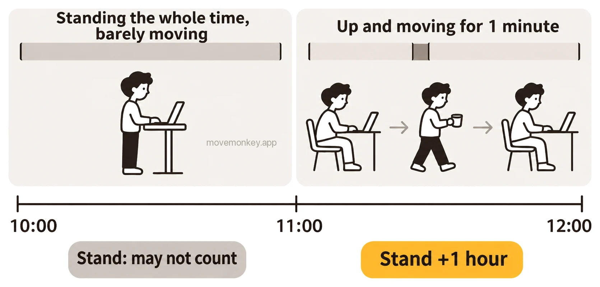

Why Isn’t Apple Watch Counting Stand Hours When You Stand?
Here’s why Apple Watch may not count a stand hour even though you stood, and which settings to check, based on what Apple says and what users report.
Why doesn’t Apple Watch count it when you’re standing?
You may have stood without moving much: Apple asks you to stand up and move, not just stand.
Apple Watch tracks standing by the clock hour: if you stand up and move for at least a minute during an hour, that hour counts as a stand hour.[1] Your stand goal is how many stand hours you aim for in a day, and you can set it anywhere from 6 to 16 hours.[2] If you haven’t stood by minute 50 of an hour, you get a stand reminder.[3]
Apple’s Close Your Rings page says: “Don’t just stand there. While you’re up, move around a bit. Get some water. Stretch. Visit a coworker.”[4]

Some users report that Apple Watch judges standing mostly from arm swing. Pushing a shopping cart, cooking, or working at a standing desk with your hands on the desk keeps your arm from swinging much, so standing may not count.[5] Researchers at the University of Dundee in the UK analyzed data from 20 Apple Watch users and found that whether an hour counted as a stand hour was most closely linked to that hour’s steps and active energy; the authors also suggest that whether a stand hour is recorded depends on more than one factor.[6] For more, see How does Apple Watch know you stood up? Does standing still count?
Can Apple Watch miss stand hours if it’s worn loosely or Wrist Detection is off?
Apple says that if you turn off Wrist Detection, “some Activity measurements are unavailable.”[7]
Wrist Detection is on by default; to see it, go to the Settings app on Apple Watch and tap Passcode.[7] Also, if Apple Watch is too loose or too tight, or a bracelet or shirt sleeve is in the way, it may not detect that it’s on your wrist; see Do you miss Apple Watch stand reminders if the watch isn’t worn properly?[8]
Carrying only your iPhone, without Apple Watch, doesn’t record standing. The Stand ring appears only if you have an Apple Watch[9], and Apple Watch is what records Stand Minutes[10].
Which settings should you check when Apple Watch isn’t recording stand hours?
First, make sure Fitness Tracking is on for your Apple Watch in the Health app on iPhone.
Apple suggests turning it on for your Apple Watch if Health isn’t recording steps or other information.[11]
- Open the Health app on your iPhone.
- Tap Summary, then tap your picture or initials. Tap Devices.
- Tap your Apple Watch.
- Tap Privacy Settings and turn on Fitness Tracking.[11]
If you’ve said you use a wheelchair, Apple Watch tracks rolling instead of standing: the Stand ring becomes the Roll ring.[1] This setting is in the Apple Watch app on iPhone: tap My Watch, tap Apps, tap Health, tap Health Details, tap Edit, then change the Wheelchair field.[12]
Why don’t stand hours from Apple Watch show up on iPhone yet?
Stand hours may show up on iPhone a little later than on Apple Watch.
Answering a developer’s question on the Apple Developer Forums, an Apple engineer explained that Health data doesn’t sync between iPhone and its paired Apple Watch in real time, and that the system decides when it syncs.[13]
Why does Apple Watch count standing even while you’re sitting?
Some users report that if your arm keeps moving while you sit, as when you’re knitting, it may count as standing.[5]
The cause is the same as when standing doesn’t count; see why standing doesn’t count above.

Stand-up reminder app · Now available on the App Store
MoveMonkey: a stand-up reminder that counts from when you last got up
A little monkey reminds you only after you’ve sat for the time you set (30, 45, 60, or 90 minutes) since you last got up. It works on iPhone and Apple Watch, or on iPhone alone, and walking or standing starts the timer over.
It starts counting only after you’re up in the morning, can stay quiet during your Lunch Break, and reminds you only during the Reminder Hours you set.
Tap Get Up, walk for just a minute, and the monkey cheers for you.
MoveMonkey’s core features are free forever, with no ads.
Learn more about MoveMonkey →